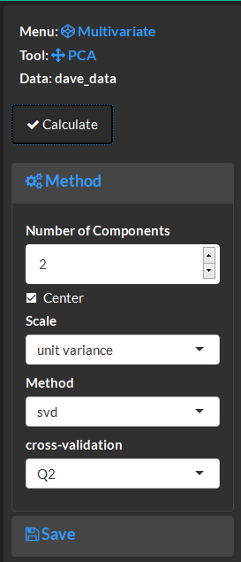
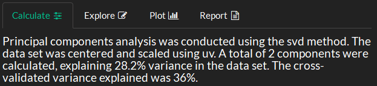
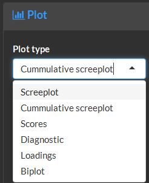
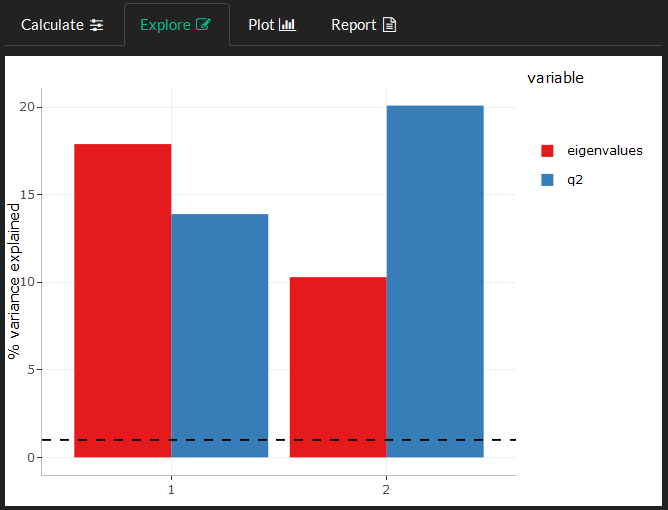
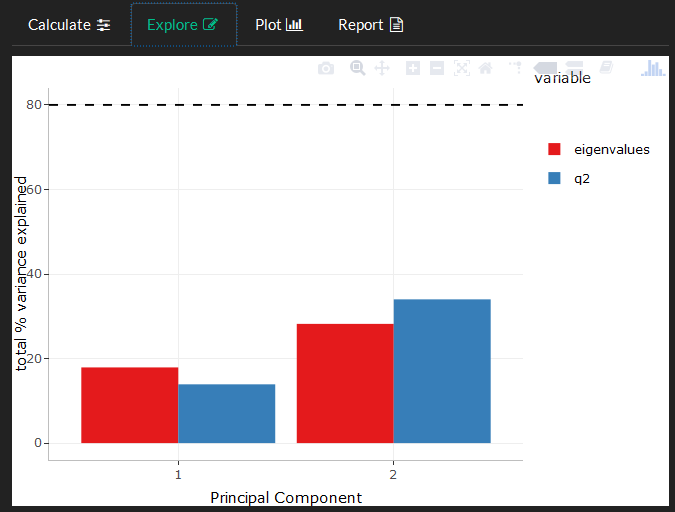
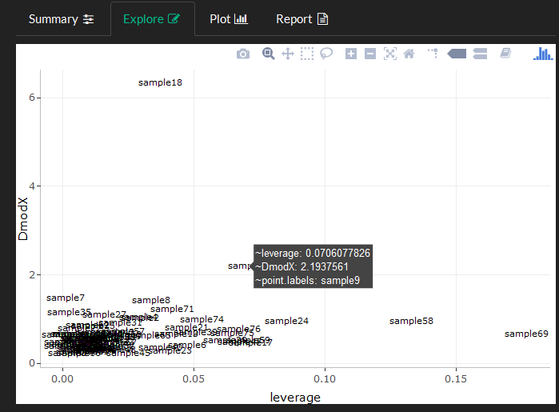
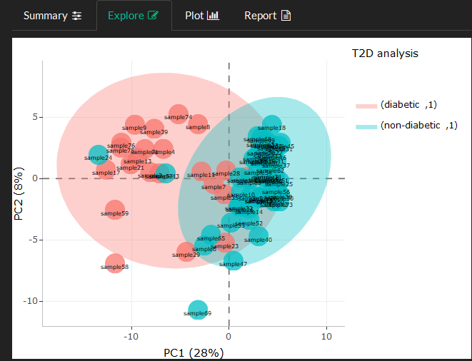
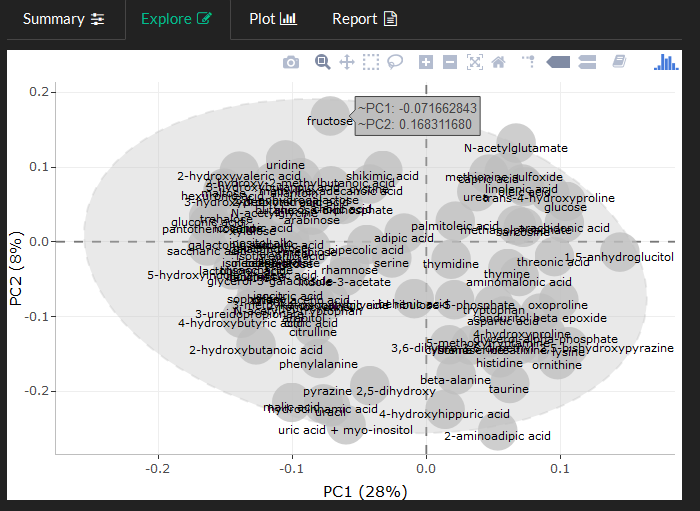
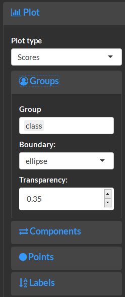
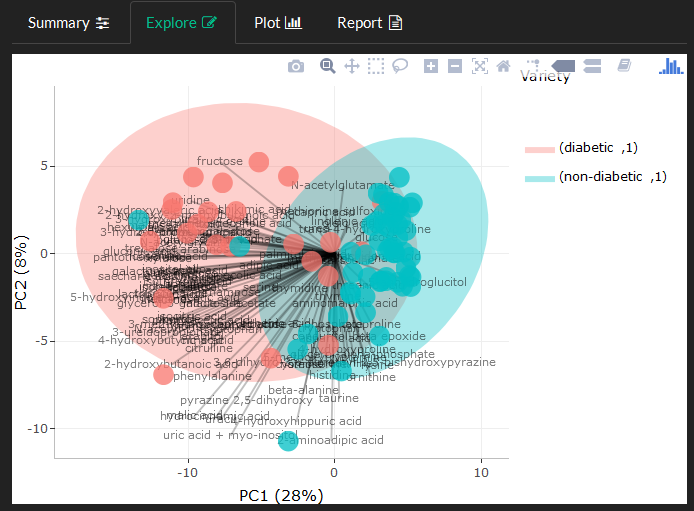

5 Multivariate
the multivariate module supports dimensional reduction and projection pursuits.
PCA
Calculate
Specify the PCA method and normalize the data through centering and scaling.

Overview methodsand the variance explained by the PCA model.

Explore and Plot
Select from a variety of plot types.

The screeplot shows the variance explained by each PC. The dashed line marks the 1 % variance limit below which components can be ommited.

Use cummulative screeplot to view the total % variance explained. The dashed line shows the boundary where 80% of the original variance in the data has been captured by the PCA model.

The diagnostics plot can be used to identify moderate and extreme sample outliers. Large sample leverage denotes a large influence of the samples variance to the identification of the PC components (outliers). The DmodX or highlights moderate multivariate sample differences. Samples showing both high leverage and DmodX should be investigated further.

Sample scores display multivariate similarities through proximity to other samples in the PCA space.

The loadings plot displays variable similarities.


The biplot can be used to simultaneously visualize sample scores and loadings over layed on top of each other. Variables with extreme loadings (large positive or negative x/y position) have the largest effects on the sample scores (may correspond to low or high values among samples with similairly extreme scores compared to others).
